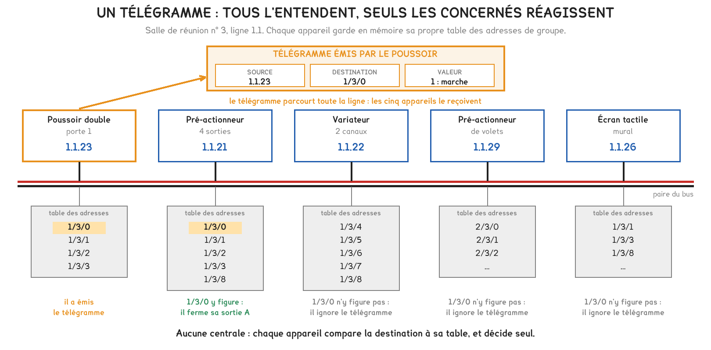
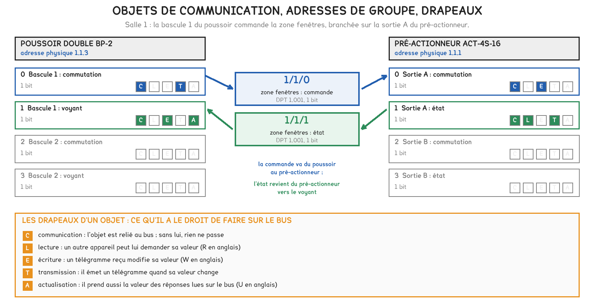
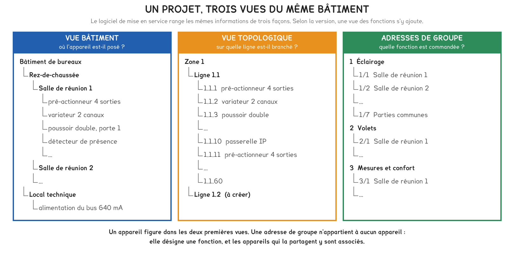
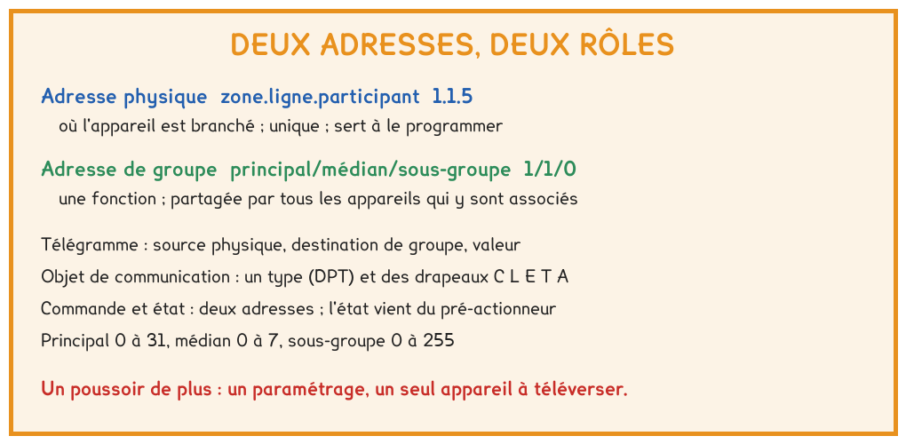

BTS FED option C · 1re année
Soixante appareils câblés sur une seule paire, et aucun poussoir qui commande encore quoi que ce soit. Ce qui les relie n'est pas un fil, mais une adresse écrite dans la mémoire de chacun.
1 outil · 6 questions · 4 exercices · 2 replis · 5 figures
Savoirs travaillés
Les six salles de réunion de la semaine 1 sont câblées sur une seule ligne. La séance a répondu à une question simple : qu’est-ce qui fait qu’un poussoir commande un luminaire, puisque aucun fil ne les relie directement ?
La réponse tient en deux adresses, qui ne répondent pas à la même question. Elle aboutit au tableau d’adressage de la salle 1, que l’atelier utilise la semaine suivante.
| Forme | Ce qu’elle désigne | |
|---|---|---|
| Adresse physique | zone.ligne.participant : 1.1.3 |
un appareil, et un seul ; elle sert à le programmer |
| Adresse de groupe | principal/médian/sous-groupe : 1/1/0 |
une fonction, partagée par tous les appareils qui y sont associés |
L’adresse physique dit où est l’appareil. L’adresse de groupe dit ce qui est commandé. Un poussoir n’envoie jamais un ordre à un appareil : il écrit une valeur sur une fonction.

Un télégramme porte trois champs : la source, adresse physique de l’émetteur ; la destination, une adresse de groupe ; la valeur. Tous les participants le reçoivent, chacun le compare à sa propre table et décide seul.
Pour aller plus loin
Chaque appareil conserve dans sa mémoire ses paramètres et sa table d’adresses de groupe, écrits une fois pour toutes par le logiciel de mise en service. Aucune information ne transite par une unité centrale : les seuls éléments partagés sont le câble et l’alimentation.
La conséquence se vérifie en panne. Si la passerelle IP d’une salle s’arrête, l’éclairage fonctionne toujours ; seule la remontée vers la GTB est perdue. C’est la différence avec un automate à modules d’entrées-sorties, dont la panne arrête toutes les commandes qu’il porte.
Deux appareils peuvent commencer à émettre en même temps. Les deux états du bus ne sont pas symétriques : l’un l’emporte sur l’autre. Chaque émetteur relit le bus pendant qu’il émet ; s’il lit autre chose que ce qu’il envoie, il se tait et réessaie ensuite.
Le télégramme prioritaire passe donc sans être retardé. À 9 600 bit/s, un télégramme court occupe le bus une vingtaine de millisecondes : une ligne en transporte une cinquantaine par seconde, ce qui explique qu’une fonction centrale utilise une seule adresse écoutée par tous.

Le logiciel de mise en service ne relie pas des appareils : il associe des objets de communication à des adresses de groupe. Chaque objet a une taille et un type de point de données, le DPT.
| DPT | Ce qu’il transporte | Taille |
|---|---|---|
| 1.001 | commutation : marche ou arrêt | 1 bit |
| 1.008 | montée ou descente | 1 bit |
| 3.007 | variation relative | 4 bits |
| 5.001 | pourcentage, de 0 à 100 % | 1 octet |
| 9.001 | température en degrés Celsius | 2 octets |
Une adresse de groupe ne réunit que des objets de même type. Les drapeaux fixent ce que chaque objet a le droit de faire : C communiquer, L être lu, E être écrit, T émettre, A s’actualiser.
La commande et l’état sont deux adresses distinctes. L’état peut changer sans passer par l’adresse de commande : un détecteur, l’écran ou la GTB éteignent aussi la salle. Seul le pré-actionneur connaît la position réelle de sa sortie ; c’est donc lui qui émet l’état, et c’est cette adresse que le voyant doit écouter.

L’arborescence à trois niveaux se choisit avant d’adresser, et s’écrit dans le dossier. Dans le bâtiment étudié, le principal désigne la fonction, le médian le local, le sous-groupe la commande ou l’état.
principal / médian / sous-groupe
Huit médians seulement : une convention qui range les locaux dans le médian ne tient pas au-delà de huit locaux.
Ajouter un poussoir ne modifie aucun appareil existant. Il se raccorde sur la paire déjà posée, ses objets sont associés aux adresses déjà créées, et lui seul est téléversé.
Il faut en revanche lui trouver une adresse physique libre, et vérifier les deux limites de la ligne : 64 participants, 640 mA. Une adresse physique en double est l’une des pannes que l’atelier fera diagnostiquer.

Exercice · D2-1
Dans le bâtiment de la séance, les dix participants de chaque salle sont numérotés salle après salle : pré-actionneur, variateur, trois poussoirs, écran, détecteur, sonde, pré-actionneur de volets, passerelle. La salle 1 commence à 1.1.1.
Quel équipement porte l’adresse physique 1.1.28 ?
Exercice · B8-1
Une ligne KNX TP1 compte 57 participants, à 10 mA chacun. Un écran et deux poussoirs y sont ajoutés.
Quel courant l’alimentation doit-elle alors fournir ?
Exercice · B8-1
L’écran d’une salle affiche la valeur de luminosité de l’estrade, de 0 à 100 %. Quel type de point de données, DPT, l’adresse correspondante doit-elle porter ?
Exercice · B8-1
Un collègue propose d’associer le voyant d’un poussoir à l’adresse de commande de l’éclairage, « pour économiser une adresse ». Expliquer en trois ou quatre lignes pourquoi ce choix produit un voyant faux.
En atelier, le projet est créé à partir du tableau d’adressage de la salle 1 : adresses physiques, associations, téléversement. En études, la séance suivante ouvre l’éclairage : ses grandeurs, son dimensionnement et son asservissement, qui s’appuieront sur les adresses de l’estrade.
Cette page rappelle la séance. Elle ne remplace pas le polycopié et ne donne aucun corrigé. Tous les calculs se font dans votre navigateur ; rien n'est enregistré.